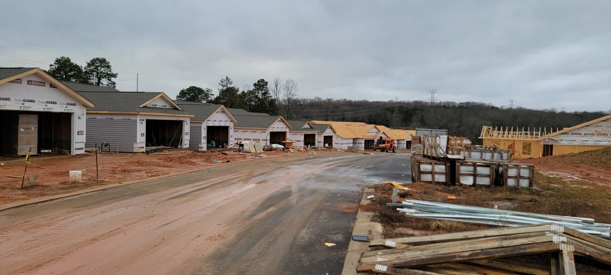

Main sewer line
Main sewer line backups, cleared
When more than one drain backs up at once, the problem is usually the main line.
- Based in Davie County
- Serving Charlotte & Concord
- Call or book online
Drain cleaning special
$XX
Drain cleaning
Mention this offer when you call or book. Offer terms: [TERMS] · Full offer terms
Call to claimSigns of a main line problem
- Several drains slow or backing up at the same time
- Water coming up in a tub or floor drain when the toilet flushes
- Gurgling from multiple fixtures
- Sewage smell inside or wet, soggy spots in the yard
Tree roots
Roots find their way into sewer lines through tiny joints and cracks. We cut them out and use a camera to check the pipe afterward.
What to do right now
Stop running water and flushing toilets, then call us.
Questions we hear a lot
Is a main line backup an emergency?
It can be, since sewage can back up into the house. Stop using water and call (336) 816-8381.
Will I need my yard dug up?
Not usually. Most main-line clogs are cleared from a cleanout. A camera inspection tells us if a repair is needed.
Drain acting up? Let's fix it.
Call now or book online.